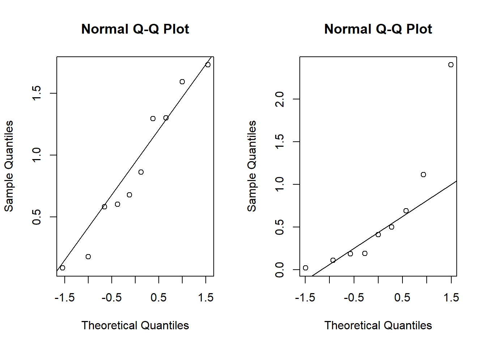

Chapter 5 Alternatives for Non-Normal Responses
When responses (or residuals) appear non-normal we may doubt the validity of z-, t-, and F- tests, especially for small sample sizes. We’ll discuss two strategies for dealing with non-normality: transformations and robust tests.
5.1 Transformations
Sometimes, when residuals/responses appear non-normal, a particular transformation/function of the values will produce residuals/responses that do appear normal. The case-in-point is the Lognormal distribution. It is, essentially, defined by the following relationship: If \(X\sim\)Lognormal, then \(\log(X)\sim\)Normal. And, vice-versa, if \(Y\sim\)Normal, then \(\exp(Y)\sim\)Lognormal. A random sample from a lognormal distribution will appear skewed to the right, or positively skewed. The log transformation dampens large (absolute) values more than small ones, reducing or removing the skew.
Y <- exp(rnorm(101))
par(mfrow = c(1,2))
hist(Y, main = 'A random sample of 101 Lognormal r.v. s')
hist(log(Y), main = 'Same data after log-transform')median(Y)## [1] 1.136285median(log(Y))## [1] 0.1277639log(median(Y))## [1] 0.1277639Of course, the log-transform can only be applied to positive data values, and is meant specifically for use with positively skewed data. Since the log transform is monotonic increasing it preserves medians. That is, the median of the log-transformed values is equal to the log of the median of the original values. This is helpful for interpreting the results of tests concerning the mean of the log-transformed values.
Allow me to elaborate. Consider a one-sample test of \(H_0:\mu = \mu_0\) where \(\mu\) denotes the population mean of the log-transformed random variable \(X = \log(Y)\). Assuming \(X\) follows a normal distribution, its mean and median are the same. So, if we reject the hypothesis and say \(\mu \ne \mu_0\) this is equivalent to saying the median of the \(Y\) population is not \(\log(\mu_0)\).
For a two sample test of \(H_0:\mu_1 = \mu_2\) the point estimate \(\overline X_1 - \overline X_2\) measures the difference in population means for the log-transformed random variables, and \(\exp(\overline X_1 - \overline X_2)\) estimates the ratio of medians for the populations on the original scale.
The log transform is not the only transformation that may aid in “normalizing” right-skewed responses. Sometimes a square root transformation is appropriate. A general method is available to select the “best” normalizing transformation for right-skewed data. I won’t elaborate on this method here, but simply note that in R the function “boxcox” will determine a good transformation to use to normalize right-skewed responses. These transformations are the Box-Cox family of functions \[\frac{y^\gamma - 1}{\gamma}\quad \gamma \ne 0, \] and where the transformation is defined to be the log-transform when \(\gamma = 0\).
5.1.1 Example: Cloud Seeding for Rainfall
The data frame “clouds” in the HSAUR2 package contains rainfall measurements (among other things) when researchers have “seeded” clouds in the atmosphere compared to when they have not done so. The data is noticeably right-skewed, and, of course positive because we’re talking about rainfall measurments.
library(HSAUR2)## Loading required package: toolsboxplot(rainfall ~ seeding, data = clouds, ylab = "Rainfall")Using the boxcox function we see that the “best” normalizing transformation has \(\gamma \approx 0.42\). Briefly, the “best” transformation is the one maximizing a normal likelihood. And, indeed boxplots of rainfall measurements under this transformation appear closer to normal.
library(MASS)
bc <- boxcox(rainfall~seeding, data = clouds)bc$x[which.max(bc$y)]## [1] 0.4242424my.clouds <- clouds
my.clouds$bc <- (my.clouds$rainfall^0.42 - 1)/ 0.42
boxplot(bc~seeding, data = my.clouds)Let’s do a two-sample t-test for difference in mean rainfall under seeding/non-seeding conditions. Remember to interpret the results carefully due to our transformation.
bc.t.test <- t.test(my.clouds$bc[my.clouds$seeding == 'no'], my.clouds$bc[my.clouds$seeding == 'yes'], alternative = 'two.sided')
bc.t.test##
## Welch Two Sample t-test
##
## data: my.clouds$bc[my.clouds$seeding == "no"] and my.clouds$bc[my.clouds$seeding == "yes"]
## t = -0.7541, df = 19.094, p-value = 0.46
## alternative hypothesis: true difference in means is not equal to 0
## 95 percent confidence interval:
## -1.6280579 0.7654181
## sample estimates:
## mean of x mean of y
## 1.551329 1.982649n1 <- sum(my.clouds$seeding == 'no')
n2 <- sum(my.clouds$seeding == 'yes')
sp2 <- (n1*var(my.clouds$bc[my.clouds$seeding == 'no']) + n2*var(my.clouds$bc[my.clouds$seeding == 'yes']))/(n1+n2-2)
residuals <- c( my.clouds$bc[my.clouds$seeding == 'no'] - mean(my.clouds$bc[my.clouds$seeding == 'no']), my.clouds$bc[my.clouds$seeding == 'yes'] - mean(my.clouds$bc[my.clouds$seeding == 'yes']) )/sqrt(sp2)
qqnorm(residuals)
qqline(residuals)We do not reject the hypothesis of equal mean (transformed) rainfall. On the original data scale, we say the ratio of population median rainfall amounts is not significantly different than 1.
We can look also at the t-test on the original data scale and see to what extent the residuals may suggest the normality assumption is suspect.
orig.t.test <- t.test(clouds$rainfall[my.clouds$seeding == 'no'], clouds$rainfall[clouds$seeding == 'yes'], alternative = 'two.sided')
orig.t.test##
## Welch Two Sample t-test
##
## data: clouds$rainfall[my.clouds$seeding == "no"] and clouds$rainfall[clouds$seeding == "yes"]
## t = -0.3574, df = 20.871, p-value = 0.7244
## alternative hypothesis: true difference in means is not equal to 0
## 95 percent confidence interval:
## -3.154691 2.229691
## sample estimates:
## mean of x mean of y
## 4.171667 4.634167n1 <- sum(clouds$seeding == 'no')
n2 <- sum(clouds$seeding == 'yes')
sp2 <- (n1*var(clouds$rainfall[clouds$seeding == 'no']) + n2*var(clouds$rainfall[clouds$seeding == 'yes']))/(n1+n2-2)
residuals <- c( clouds$rainfall[clouds$seeding == 'no'] - mean(clouds$rainfall[clouds$seeding == 'no']), clouds$rainfall[clouds$seeding == 'yes'] - mean(clouds$rainfall[clouds$seeding == 'yes']) )/sqrt(sp2)
qqnorm(residuals)
qqline(residuals)At least the tails of the residuals certainly look like less of a match than the Box-Cox transformed responses. This is consistent with the strong right skew we see in the original rainfall data.
5.2 Rank-Sum Test
We have seen that certain one-to-one transformations can be helpful when dealing with positively-skewed responses. But, what about other types of non-normal data? One general-purpose approach to comparing two populations of non-normal responses is to apply a rank transformation and use the Mann-Whitney (Rank-Sum) test.
Unlike the previous Box-Cox transformations, the rank transformation is not one-to-one, so some information is lost moving from the original to the transformed data (the ranks). But, in exchange for this price we pay we obtain a data set that is easier to analyze, especially in certain special cases.
To perform the rank-sum test we first sort all the responses, with the two groups pooled together. If some responses have the same value, we assign to them the average of the corresponding ranks. For example, the sorted responses 1,2,2,3,4,6 would get the ranks 1,2.5,2.5,4,5,6. Let \(T = \max\{T_1, T_2\}\) where \(T_1\) and \(T_2\) are the sums of the ranks for responses in groups 1 and 2, respectively. Let \(n_T\) be the sample size of the group corresponding to \(T\). Let \(\overline r\) and \(s_r\) be the sample mean and sample standard deviation of all of the ranks. Then, the rank-sum test statistic is defined as \[z = \frac{T - n_T\overline r}{s_r\sqrt{\frac{n_1n_2}{n_1+n_2}}}.\] For large \(n_1\) and \(n_2\), \(z \stackrel{\cdot}{\sim}N(0,1)\), so the test conclusion follows from comparing \(z\) to standard normal quantiles. For example, the p-value is \(2(1-\Phi(z))\).
Just what does the rank-sum test test? In the most general form, under no further assumptions, the rank-sum tests equality of distributions of the response in the two groups. However, the test will only detect differences in those distributions if \(P(X_1 > X_2) \ne P(X_2 > X_1)\) where \(X_1\) and \(x_2\) denote the response random variable from each population. For example, if the populations are both normal with the same mean but different variances, then the rank-sum test will not generally be able to distinguish between the populations. In the special case that the populations are different by a location shift, i.e., \(F_1(x) = F_1(x+c)\) for a constant \(c\), the null hypothesis is equivalent to testing equality of population medians.
5.2.1 Example: ratio measurements
The following data represent the ratios of lengths of canine and molar teeth in two populations of animals: wild and captive. Ratios are tricky, and may behave badly when the denominator can be close to zero. These ratio measurements exhibit non-normality, but not positive skew like we have seen before.
Download teeth.csvNext, we’ll implement the rank-sum test.
teeth <- teeth[order(teeth$ratio.teeth),]
ranks <- rank(teeth$ratio.teeth, ties = 'average')
teeth$ranks <- ranks
T1 <- sum(teeth$ranks[teeth$group == 1])
T0 <- sum(teeth$ranks[teeth$group == 0])
T <- max(T1, T0)
n1 <- sum(teeth$group == 1)
n0 <- sum(teeth$group == 0)
nt <- ifelse(T==T1, n1, n0)
rbar <- mean(teeth$ranks)
sr <- sd(teeth$ranks)
test.stat <- (T - nt*rbar)/(sr * sqrt(n1*n0/(n1+n0)))
test.stat## [1] 2.3081882*(1-pnorm(test.stat))## [1] 0.02098868The p-value is less than 0.05 so we would reject the null hypothesis of equal distributions. The teeth measurements have different distributions in the captive and wild populations. Digging in a bit further, we plot the empirical distribution functions of the measurements in each group. This shows the CDFs are approximately equivalent up to a location shift. So, it is reasonable to interpret the rank-sum test and rejecting the hypothesis of equal medians: the wild and captive populations have different median tooth ratios.
F0 <- ecdf(teeth$ratio.teeth[teeth$group==0])
F1 <- ecdf(teeth$ratio.teeth[teeth$group==1])
plot(F0, main = '')
lines(F1, col = 'blue')Finally, compare the the rank-sum test to Student’s t-test. The t-test shows an even smaller p-value, but note that the qq-plot shows strong non-normality, which calls into question the appropriateness of the t-test.
my.t.test <- t.test(ratio.teeth~group, data = teeth)
my.t.test##
## Welch Two Sample t-test
##
## data: ratio.teeth by group
## t = -3.1697, df = 14.969, p-value = 0.006359
## alternative hypothesis: true difference in means between group 0 and group 1 is not equal to 0
## 95 percent confidence interval:
## -8.780943 -1.719057
## sample estimates:
## mean in group 0 mean in group 1
## 7.98 13.23z <- c((teeth$ratio.teeth[teeth$group==0] - my.t.test$estimate[1]) / my.t.test$stderr, (teeth$ratio.teeth[teeth$group==1] - my.t.test$estimate[2]) / my.t.test$stderr)
qqnorm(z)
qqline(z)5.3 Signed-rank test
The signed-rank test or Wilcoxon signed-rank test is the paired analog of the Mann-Whitney test. As an illustrative example we consider a real twins study (not simulated this time) comparing BMIs in pairs of twins.
library(mets)## Loading required package: timereg## Loading required package: survival## Loading required package: lava## mets version 1.3.0data("twinbmi")
head(twinbmi)## tvparnr bmi age gender zyg id num
## 1 1 26.33289 57.51212 male DZ 1 1
## 2 1 25.46939 57.51212 male DZ 1 2
## 3 2 28.65014 56.62696 male MZ 2 1
## 5 3 28.40909 57.73097 male DZ 3 1
## 7 4 27.25089 53.68683 male DZ 4 1
## 8 4 28.07504 53.68683 male DZ 4 2twinwide <- fast.reshape(twinbmi, id="tvparnr",varying=c("bmi"))
head(twinwide)## tvparnr bmi1 age gender zyg id num bmi2
## 1 1 26.33289 57.51212 male DZ 1 1 25.46939
## 3 2 28.65014 56.62696 male MZ 2 1 NA
## 5 3 28.40909 57.73097 male DZ 3 1 NA
## 7 4 27.25089 53.68683 male DZ 4 1 28.07504
## 9 5 27.77778 52.55838 male DZ 5 1 NA
## 11 6 28.04282 52.52231 male DZ 6 1 22.30936twinwide$bmidiff <- (twinwide$bmi1 - twinwide$bmi2)
twinwide.cc <- complete.cases(twinwide)
twinwide <- twinwide[twinwide.cc,]
head(twinwide)## tvparnr bmi1 age gender zyg id num bmi2 bmidiff
## 1 1 26.33289 57.51212 male DZ 1 1 25.46939 0.86350
## 7 4 27.25089 53.68683 male DZ 4 1 28.07504 -0.82415
## 11 6 28.04282 52.52231 male DZ 6 1 22.30936 5.73346
## 13 7 28.06642 52.62944 male DZ 7 1 26.51180 1.55462
## 19 10 30.47797 51.24806 male DZ 10 1 27.66010 2.81787
## 23 12 27.39818 50.02067 male DZ 12 1 25.97012 1.42806dim(twinwide)## [1] 4271 9The BMI differences may appear normal but actually exhibit kurtosis. Since this is an unusual non-normality we will apply a rank transformation.
hist(twinwide$bmidiff, freq = F)
dnorm.tw <- function(x) dnorm(x,mean(twinwide$bmidiff), sd(twinwide$bmidiff))
curve(dnorm.tw, -20,20, add = TRUE)We can compute the test statistic and p-value by hand as follows: let \(T\) be the sum of the ranks of the absolute BMI differences in the group of positive differences. Then, \(z = (T - \tfrac14n(n+1)) / \sqrt{n(n+1)(2n+1)/24}\) is approximately standard normal.
absdiff <- abs(twinwide$bmidiff)
signs <- ifelse(twinwide$bmidiff<0,-1,1)
n<-length(signs)
sr.nums <- cbind(absdiff, signs, rank(absdiff))
sr.nums <- sr.nums[order(sr.nums[,1]),]
T <- sum(sr.nums[sr.nums[,2]==1,3])
z <- (T - n*(n+1)/4)/sqrt(n*(n+1)*(2*n+1)/24)
2*(1-pnorm(abs(z)))## [1] 0.1904966R has built in functions for the rank-sum and signed-rank tests.
wilcox.test(twinwide$bmi1, twinwide$bmi2, paired = TRUE)##
## Wilcoxon signed rank test with continuity correction
##
## data: twinwide$bmi1 and twinwide$bmi2
## V = 4551983, p-value = 0.2021
## alternative hypothesis: true location shift is not equal to 0In this case we likely will not come to a different conclusion if we apply Student’s t-test.
t.test(twinwide$bmi1, twinwide$bmi2, paired = TRUE)##
## Paired t-test
##
## data: twinwide$bmi1 and twinwide$bmi2
## t = 1.1008, df = 4270, p-value = 0.2711
## alternative hypothesis: true mean difference is not equal to 0
## 95 percent confidence interval:
## -0.04832046 0.17204938
## sample estimates:
## mean difference
## 0.061864465.4 Bootstrap
5.4.1 Intro to the bootstrap
For hypothesis testing and confidence intervals, there is a “statistic” whose sampling distribution is required
For example, to test \(H_0:\mu = \mu_0\) using a normal random sample \(X_1, ..., X_n\) with \(X_i \stackrel{iid}{\sim}N(\mu, \sigma^2)\) the test statistic
\[T = \frac{\bar X - \mu_0}{S/\sqrt{n}}\]
has a \(t\) distribution with \(n-1\) degrees of freedom given the null hypothesis is true.
Only in very simple problems can we determine an “exact” test statistic. For example, in the two-sample t-test with unknown, unequal population variances, the T statistic is only approximate.
We often rely on assumptions (like normality) or large sample sizes (CLT) in order to derive approximate (or asymptotic) distributions of statistics.
The bootstrap (in a manner similar to Monte Carlo) tries to approximate the distribution of a test statistic using simulations.
For a distribution with cdf \(F\), we are interested in a parameter \(\theta = \phi(F)\), and functional of \(F\).
Examples:
1. Mean - \(\phi(F) = \int xdF(x)\)
2. Anything else that is a function of moments, like variance
3. Median - \(\phi(F) = \inf\{x: F(x)\geq 0.5\}\)…
Given data \(X_1, ..., X_n\) the empirical CDF (think of this as an estimate of \(F\)) is \[\hat F(x) = \frac{1}{n}\sum_{i=1}^n 1\{X_i \leq x\}.\]
A natural estimate of \(\theta\) is the “plug-in” estimator \(\hat\theta = \phi(\hat F)\).
Given the previous setup of CDF and empirical CDF, suppose we want to estimate \(\theta\). If we could somehow simulate from \(F\), then our knowledge of Monte Carlo suggests the following:
1. Simulate many data sets, say \(M\), of size \(n\): \(X_{1,1}, ..., X_{n,1}\), …, \(X_{1,M}, ..., X_{n,M}\).
2. From the \(M\) data sets, compute \(\hat{\theta}_i\) for \(i=1, ..., M\).
3. Then, our many estimates should given us an idea of the mean and the variance of \(\hat{\theta}\).
This actually works when we know the distribution of the test statistic. In the one-sample t-test for a normal mean, the test statistic has a \(t(n-1)\) distribution. So, if we sample from this distribution many times, we will be able to find the rejection region for the hypothesis test by computing Monte Carlo estimates of the \(t(n-1)\) quantiles, but this is rather trivial…
Of course, we (usually) cannot simulate from \(F\) because it is unknown (depends on unknown parameters).
Bootstrap idea: Replace simulation from \(F\) with simulation from \(\hat F\)!
Note: it is easy to simulate from \(\hat F\), it’s just simulation from a discrete uniform distribution with probabilities \(1/n\) on each data point.
Suppose we are given the following two samples:
set.seed(3214354)
x <- rexp(10,1)
y <- rexp(9,0.8)
round(x,2)## [1] 0.18 1.30 0.09 1.30 1.73 0.86 1.59 0.60 0.58 0.68round(y,2)## [1] 0.02 0.50 0.41 0.19 0.19 0.69 2.40 1.11 0.11We could use the t-test, but wait…
par(mfrow = c(1,2))
qqnorm(x)
qqline(x)
qqnorm(y)
qqline(y)
shapiro.test(x)##
## Shapiro-Wilk normality test
##
## data: x
## W = 0.94146, p-value = 0.5694shapiro.test(y)##
## Shapiro-Wilk normality test
##
## data: y
## W = 0.77085, p-value = 0.009449What “test statistic” should I use to test \(H_0:\mu_X = \mu_Y\)? Why not \(\bar X - \bar Y\)?
test.statistic <- mean(x) - mean(y)
boot.test.statistic <- rep(NA, 10000)
for(i in 1:10000){
boot.x <- sample(x,replace = T)
boot.y <- sample(y, replace = T)
boot.test.statistic[i] <- mean(boot.x)-mean(boot.y)
}
test.statistic## [1] 0.2657391quantile(boot.test.statistic,0.025)## 2.5%
## -0.345881quantile(boot.test.statistic,0.975)## 97.5%
## 0.792484m <- median(boot.test.statistic)
approx.p.value = ifelse(test.statistic > m, sum((boot.test.statistic-m) > (test.statistic - m))/10000 + sum((boot.test.statistic-m) < (m-test.statistic))/10000, sum((boot.test.statistic-m) > (m-test.statistic))/10000 + sum((boot.test.statistic-m) < (test.statistic-m))/10000 )
approx.p.value ## [1] 0.97265.4.2 Bootstrap Confidence Intervals
A variety of methods are used to construct confidence intervals using the bootstrap distribution of an estimator. We’ll discuss the percentile, basic, and Studentized methods, although several others are available, including the bias-corrected and accelerated (BCa) intervals computed by default in R’s boot package.
Suppose the bootstrap samples \(\hat\theta_1, \ldots, \hat\theta_B\) are available. The simplest bootstrap interval estimate is given by the percentile method, which defines the \(100(1-\alpha)\%\) CI to be the \(\alpha/2\) to \((1-\alpha/2)\) sample quantiles of \(\hat\theta_1, \ldots, \hat\theta_B\). There are good arguments against the percentile method, but we won’t wade into the details presently. Those arguments tend to favor the basic bootstrap method, which defines the \(100(1-\alpha)\%\) CI to be the interval \((2\overline \theta - \hat\theta_{1-\alpha/2}, \, 2\overline \theta - \hat\theta_{\alpha/2})\), which is twise the sample mean of the bootstrapped estimates minus the \((1-\alpha/2)\) and \(\alpha/2\) sample quantiles of those bootstrapped estimates \(\hat\theta_1, \ldots, \hat\theta_B\).
The last method we’ll discuss is the Studentized bootstrap. The idea of the method is to mimic the usual z- or t-test pivotal quantity \(\frac{\hat\theta - \theta}{se(\hat\theta)}\). First, compute \(\hat\theta\) for teh original data. Then, perform the following nested bootstrap, for \(b\) in 1 to \(B\) do:
1.Resample the data with replacement to generate the \(b^{th}\) bootstrap data set
a. for this \(b^{th}\) data set compute the point estimate \(\tilde \theta_b\)
b. Resample the resamples! Generate \(K\) nested bootstrap resamples sample of data. For each of them compute \(\tilde\theta_{b,k}\) for \(k=1, \ldots, K\).
c. Estimate \(se(\tilde \theta)\) as the standard deviation of \(\tilde\theta_{b,k}\) for \(k=1, \ldots, K\).
d. Keep the studentized value \(q_b = \frac{\tilde\theta_b - \hat\theta}{se(\tilde\theta_b)}\)
2. Let \(se(\hat\theta)\) be estimated by the sample standard deviation of \(\tilde\theta_1, \ldots, \tilde\theta_B\).
3. Define the Studentized interval as
\[(\hat\theta - q_{1-\alpha/2}se(\hat\theta), \, \hat\theta - q_{\alpha/2}se(\hat\theta))\]
where \(q_\alpha\) is the \(\alpha\) sample quantile of the Studentized \(q\) values.
set.seed(3214354)
x <- rexp(10,1)
y <- rexp(9,0.8)
round(x,2)## [1] 0.18 1.30 0.09 1.30 1.73 0.86 1.59 0.60 0.58 0.68round(y,2)## [1] 0.02 0.50 0.41 0.19 0.19 0.69 2.40 1.11 0.11my.boot <- function(x,y, B, K, alpha){
hattheta <- mean(x) - mean(y)
tildetheta <- rep(NA,B)
q <- rep(NA,B)
for(b in 1:B){
indices1 <- sample(10,10,replace = TRUE)
indices2 <- sample(9,9,replace = TRUE)
xstar <- x[indices1]
ystar <- y[indices2]
tildetheta[b] <- mean(xstar) - mean(ystar)
tilde2 <- rep(NA,K)
for(k in 1:K){
indices1 <- sample(10,10,replace = TRUE)
indices2 <- sample(9,9,replace = TRUE)
xstar2 <- xstar[indices1]
ystar2 <- ystar[indices2]
tilde2[k] <- mean(xstar2)-mean(ystar2)
}
q[b] <- (tildetheta[b] - hattheta)/sd(tilde2)
}
intv <- hattheta - sd(tildetheta)*quantile(q,c(1-alpha/2,alpha/2))
return(as.numeric(intv))
}
my.boot(x,y,1000,50,0.05)## [1] -0.6147748 0.85760965.4.3 Bootstrapping linear models
When we have only one sample of iid data, bootstrapping is straightforward: simply sample with replacement n times from the original data to obtain a single bootstrap-resampled data set. Repeat many times, recording the estimate corresponding to each resampled set. When there is more “structure” present in the data we need to think carefully about how that structure should be treated by the resampling procedure.
In linear models, i.e., the Gauss-Markov model, for each response \(Y_i\) there is a corresponding covariate vector \(X_i\). How should these pairs \((Y_i, X_i)\) be treated by the resampling procedure?
One method for bootstrapping a linear model is called row-resampling. Imagine binding the \(n\times 1\) column of responses \(Y\) to the \(n\times p\) matrix of covariates \(X\) and then resampling rows with replacement. We can do this by sampling the integers \(1, \ldots, n\) with replacement, each time taking the corresponding row of \((Y, X)\) as the bootstrap resample. Row resampling treats the pairs \((Y_i, X_i)\) as random, but this is not always reasonable. For example, in a two-sample experiment in which we apply a treatment to 10 of 20 subjects at random and keep the remaining 10 as a control group, row resampling will produce resampled data sets with more than ten in one of the two groups and fewer in the other, which is not how the experiment was performed.
When the design is fixed, e.g., we have precisely ten subjects in each group, a different bootstrap method, called residual boostrap, makes more sense. The residual bootstrap starts with the residuals \(e = y - \hat y = y - X_i\hat\beta\). We resample the residuals to obtain \(e^\star = (e_1^\star, \ldots, e_n^\star)^\top\). Next, we compute the bootstrapped responses, \(y_i^\star = X_i\hat\beta + e_i^\star\). Finally, we compute \(\hat\beta^\star\) using \(X\) and \(y^\star\). This way, the design matrix \(X\) remains the same throughout the bootstrap procedure, preserving the structure of the experiment.
Example: Consider the following experiment to evaluate the effect of a bacterial infection on the lifespan of Guinea pigs as measure in days. First, we apply the ro-resampling method. Admittedly, this method makes little sense if we intend for the experiment to have 64 pigs in the control group and 58 in the treatment group.
pigs <- read.csv('guinea_pigs.csv')
my.lm <- lm(Time~Treatment, data = pigs)
my.lm##
## Call:
## lm(formula = Time ~ Treatment, data = pigs)
##
## Coefficients:
## (Intercept) TreatmentControl
## 242.5 102.7my.lm$coefficients## (Intercept) TreatmentControl
## 242.5345 102.6843n <- length(pigs$Pig)
r.r.coefs <- matrix(NA,1000,2)
row.resample.boot <- function(indices){
data.star <- pigs[indices,]
my.lm <- lm(Time~Treatment, data = data.star)
return(as.numeric(my.lm$coefficients))
}
for(i in 1:1000){
r.r.coefs[i,] <- row.resample.boot(sample.int(n,n,TRUE))
}
r.r.means <- colMeans(r.r.coefs)
percentiles1 <- quantile(r.r.coefs[,1], c(0.05,0.95))
percentiles1## 5% 95%
## 218.0000 268.3603percentiles2 <- quantile(r.r.coefs[,2], c(0.05,0.95))
percentiles2## 5% 95%
## 49.40079 154.59927c(2*r.r.means[1] - percentiles1[2], 2*r.r.means[1] - percentiles1[1])## 95% 5%
## 216.4051 266.7653c(2*r.r.means[2] - percentiles2[2], 2*r.r.means[2] - percentiles2[1])## 95% 5%
## 50.48009 155.67856Next, we implement the residual-bootstrap method. Note the two methods give very similar \(90\%\) basic bootstrap CIs for \(\beta_2\) but disagree a bit for \(\beta_1\).
pigs <-
read.csv('guinea_pigs.csv')
my.lm <- lm(Time~Treatment, data = pigs)
my.lm##
## Call:
## lm(formula = Time ~ Treatment, data = pigs)
##
## Coefficients:
## (Intercept) TreatmentControl
## 242.5 102.7my.lm$coefficients## (Intercept) TreatmentControl
## 242.5345 102.6843n <- length(pigs$Pig)
resids <- my.lm$residuals
r.r.coefs <- matrix(NA,1000,2)
resid.boot <- function(indices){
resids.star <- resids[indices]
y.star <- cbind(rep(1,n), ifelse(pigs$Treatment=="Control",1,0))%*%matrix(as.numeric(my.lm$coefficients),2,1) + resids.star
data.star <- pigs
data.star$y.star <- y.star
my.lm <- lm(y.star~Treatment, data = data.star)
return(as.numeric(my.lm$coefficients))
}
for(i in 1:1000){
r.r.coefs[i,] <- resid.boot(sample.int(n,n,TRUE))
}
r.r.means <- colMeans(r.r.coefs)
percentiles1 <- quantile(r.r.coefs[,1], c(0.05,0.95))
percentiles1## 5% 95%
## 205.1938 281.0952percentiles2 <- quantile(r.r.coefs[,2], c(0.05,0.95))
percentiles2## 5% 95%
## 50.20677 154.69151c(2*r.r.means[1] - percentiles1[2], 2*r.r.means[1] - percentiles1[1])## 95% 5%
## 203.5823 279.4838c(2*r.r.means[2] - percentiles2[2], 2*r.r.means[2] - percentiles2[1])## 95% 5%
## 52.21648 156.70123